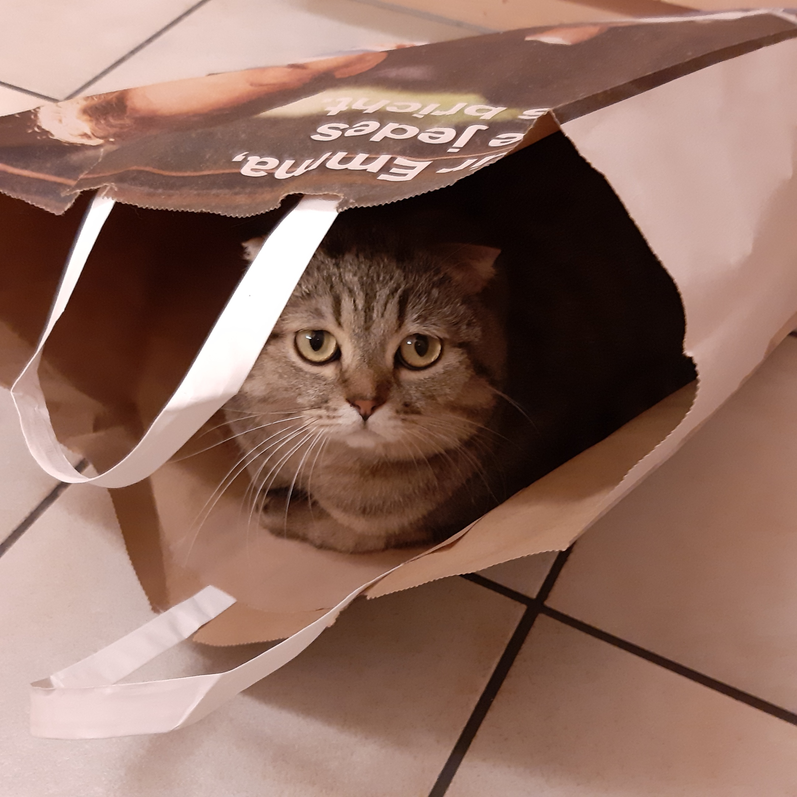

Webseite über Katzen und Kätzchen
Fakten über kleine Kätzchen
Nach der Geburt:
Nach der Geburt sind die keinen Katzen blind, taub und ausgehungert. Die wiegen dann in etwa 100 Gramm, wobei dieses Gewicht bei vielen Katzen variiert und zwischen 60 und 140 Gramm liegen kann. Durch die Muttermilch bekommen die kleinen Katzen die erste wichtige Mahlzeit in ihrem Leben und können sich somit schnell entwickeln. Nach rund zwei Wochen ist es dann endlich soweit und die Katzenbabys öffnen zum ersten Mal ihre Augen, richten langsam die Ohren auf und entdecken dann ihre Sinne. Zu dieser Zeit wiegen sie dann meist rund 200 Gramm. Aktiver werden die kleinen Katzenbabys ca. ab der 3 Woche nach der Geburt.
Wahrnehmung:
Bereits nach kurzer Zeit jedoch fauchen sie zaghaft, wenn sie berührt werden oder aber einen bestimmten Geruch wahrnehmen, und schnurren sofort, wenn sie sich an den Körper ihrer Mutter schmiegen. Wenn das Baby sich zu viel vom Nest entfernt, wird es anfangen zu schreien und dadurch auf seine Lage aufmerksam machen. Sofort ist die Katzenmama dann wieder zur Stelle und kümmert sich um den kleinen Ausreißer!
Sauberkeit:
Auch das Katzenklo können die Kleinen bald ohne große Probleme selbst nutzen, denn die Katzenmama erzieht sie streng zur Stubenreinheit. Katzen sind also nicht nur besonders faszinierende Lebewesen, sondern auch besonders rein. Dies merkt man auch daran, dass sie sich gerne und immer putzen. Sogar aus dem Schlaf einmal herausgerissen ist meist die erste Sache, die schon die Kleinen tun, sich sanft über das Gesicht zu putzen. Aus diesem Grund sollten die Jungtiere auch mindestens 10 bis 12 Wochen bei ihrer Mutter und den Geschwistern bzw. anderen Katzen bleiben, damit sie das Umfeld nicht nur kennenlernen, sondern auch positive Erfahrungen sammeln können.
Kontakt mit Menschen oder anderen Katzen:
Kätzchen die in den ersten Lebenswochen hingegen durchwegs positive Kontakte mit Menschen haben, entwickeln sich auch später zu zutraulichen Tieren. Gibt es in den ersten Lebensphasen keinen Kontakt zu Menschen bleiben die Tiere den Menschen gegenüber meist auch später scheu und extrem ängstlich.
Informationen über unseren Kater
Unser Barsik hat am 12. Mai Geburtstag
Und er ist eine Scottish Fold Katze
Steckbrief
Größe: mittelgroß
Gewicht: Katze 3,5 - 5 kg; Kater 4,5 - 7 kg
Felllänge: Kurzhaar
Fellfarben: alle Farben und Point-Farben
Augenfarbe: passend zu Fell
Ursprungsland: Schottland
Charakteristik
Bewegungsdrang: mittel
Lautstärke: gering
Pflegeaufwand: mittel
Zeitaufwand: mittel
Aussehen
Die Scottish Fold ist mittelgroß und muskulös. Ihr Kopf ist rund und breit und besitzt ein kräftiges Kinn und Kiefer. Sie hat ein geschwungenes Profil ohne Stopp. Ihre Ohren sind vorwärts abwärts gefaltet und klein. Sie liegen eng am Kopf an und heben die Rundheit des Kopfes hervor. Ihre Augen sind groß und passen in der Farbe zum Fell. Der Schwanz und die Beine der Scottish Fold dürfen nicht zu kurz geraten und müssen in jedem Fall gut beweglich sein.
Das Haarkleid der Scottish Fold ist mittelkurz und sehr dicht. Es besitzt eine weiche Textur und es kommen keine toten Haare darin vor. Die Struktur des Fells kann je nach Farbe und Jahreszeit variieren. Die Haare der Scottish Fold liegen nicht eng an. Sie stehen eher etwas ab und lassen das gesamte Fell dadurch plüschartig wirken. In der Zucht der Rassekatze mit den Kippohren sind alle Farben und Point-Farben ohne Weiß anerkannt.
Charakter
Die gesellige Schottin eignet sich gut als Familienkatze, da sie Kinder mag und auch mit hektischen Momenten gut zurechtkommt. Egal ob Hund, Katze oder Meerschweinchen – eine Scottish Fold verträgt sich mit anderen Haustieren gut und sollte nicht als Einzelkatze gehalten werden. Die liebenswerte Rassekatze ist immer gut gelaunt, sanft, intelligent, verspielt, freundlich, anhänglich und manchmal zu Späßen aufgelegt.
Herkunft und Geschichte
In Schottland wurde 1961 in einem Wurf Bauernhofkatzen eine Katze mit „umgekippten“ Ohren entdeckt – sie wurde Susie getauft und sollte die Stammmutter der Scottish Fold werden. Aufgebaut wurde die Rasse in Schottland und England durch die Einkreuzung von Hauskatzen und der British Shorthair. Für die Gesundhaltung finden in Amerika Fremdverpaarungen mit der American Shorthair und der British Shorthair statt, in Europa mit Europäisch-Kurzhaarkatzen.
Hätten Sie's gewusst?
Für die Gesunderhaltung der Rasse wird heutzutage in den USA gerne die American Shorthair und in Europa die Britisch Kurzhaar eingekreuzt. In solch einem Fall bleibt eines bis zu sechs Wochen ungewiss: Welches Kätzchen tatsächlich gerade Ohren hat und welches nicht. Denn erst wenn die Ohren zu diesem Zeitpunkt gut am Kopf anliegen, weiß der Züchter, dass es sich um eine echte „Faltohrkatze“ handelt. Kätzchen, die Stehohren behalten, nennt man Scottish Straight.
Bilder
Das ist user kleiner Kater Barsik

Das sind andere Kätzchen